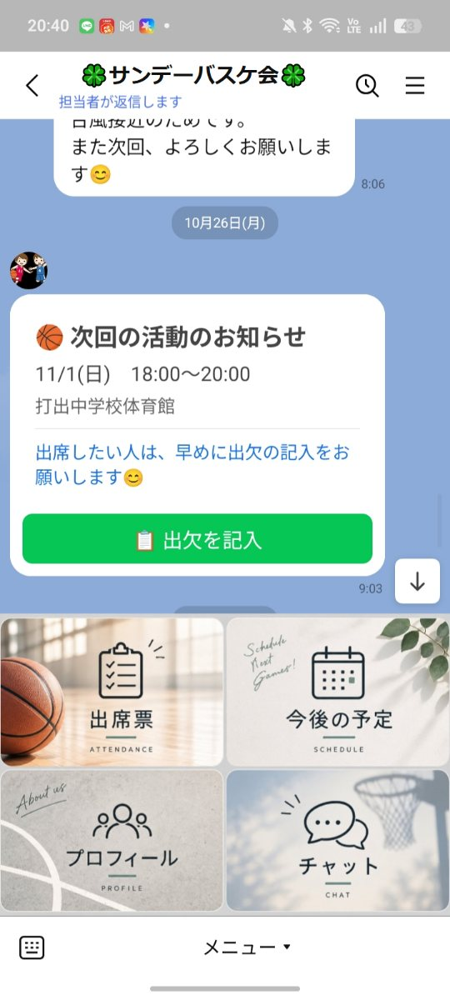
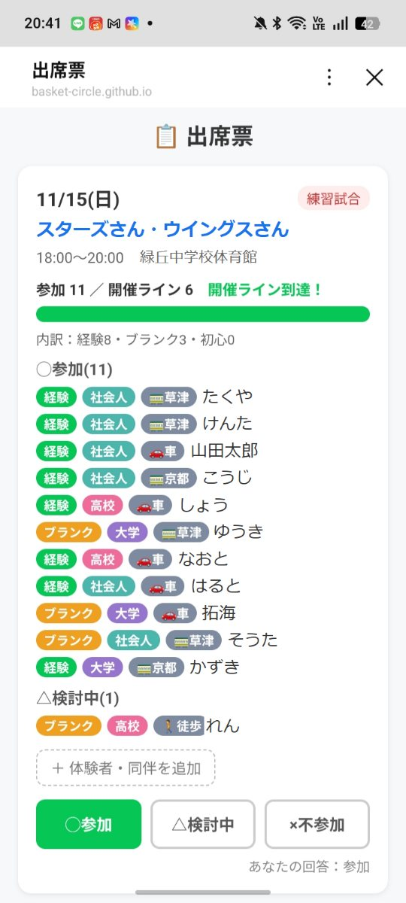
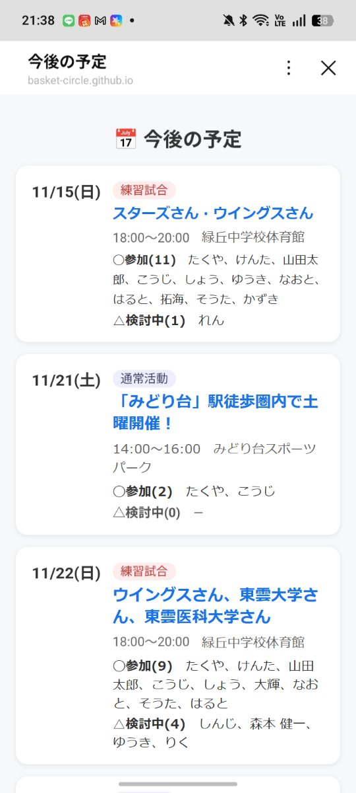

🏀 サークル出欠アプリの紹介
社会人バスケサークルの「今週、誰が来るか」を LINE だけで記入・確認できるようにした自作アプリです。前半で画面を、後半で作り方を紹介します。
画面写真の名前・サークル名・会場名はすべて架空のものに差し替えています。運営者だけが使う管理画面は省いています。
1. 画面と使い方
メンバーが触るのは LINE 公式アカウントのトーク画面と、そこから開く3つの画面だけです。アプリのインストールは要りません。
1-1. 入口は LINE 公式アカウント

下のメニューから4つの機能へ
- 出席票：出欠を記入し、参加者の顔ぶれを見る
- 今後の予定：先の活動日を一覧で見る
- プロフィール：表示名やレベルを登録する（最初の1回だけ）
- チャット：メンバー同士のグループ（LINE のオープンチャット）
出席票・予定・プロフィールは、LINE の中で開く Web 画面（LIFF）として作っています。チャットは LINE 標準の機能にリンクしているだけです。
活動が近づくと、トークに「次回の活動のお知らせ」と「出欠カード」が自動で届きます。
1-2. 出席票


活動日ごとに1枚のカード
- 参加人数と開催ライン（この人数が集まれば開催、の目安）を進捗バーで
- 参加者の名簿。1人ずつ 経験ブランク初心 のレベル、高校大学社会人 の区分、交通手段のバッジが付く。初心者でも顔ぶれを見て行きやすくするのが狙い
- ◯参加／△検討中／×不参加 のボタンを押すだけで回答。通常活動の日は「隣のコートで自由練習」も選べる
- 不参加は他の人には見えない。名簿に載るのは参加と検討中だけ
- LINE を持っていない人（体験の友人、親子参加のお子さんなど）は、連れてくる人が代わりに名簿へ追加できる
- プロフィール未登録でも回答できる。名簿には「未登録」のバッジで載る
1-3. 今後の予定

先の活動をまとめて見る
- 公開中の活動が日付順に並ぶ。種別（通常活動／練習試合／イベント／お休み）、名称、時間と会場、参加者と検討中の名前
- 見るだけの画面。記入は出席票で行う
- 出席票と同じデータを、バッジを付けずに短く並べたもの
1-4. プロフィール登録

最初の1回だけ
- 表示名（本名でなくてよい）、レベル、区分、交通手段 の4つ。年齢は聞かない
- ここで登録した内容が、出席票と出欠カードのバッジになる
- はじめて登録したときは、本人の発言としてあいさつがトークに送られ、続けてグループLINE への参加をお願いするカードが届く。新しく入った人の案内が、友だち追加 → プロフィール登録 → グループ参加 の順に自動で進むようにしている
1-5. 自動で届くお知らせと出欠カード


活動が近づくと自動で届く
- 次回の活動のお知らせ：日時・会場・名称と、出席票を開くボタン
- 出欠カード：その時点の参加人数と名簿。出席票と同じバッジ付き。まだ答えていない人への催促を兼ねる
- どちらも LINE の Flex Message（JSON で組むカード型メッセージ）。静止画ではないので、文字が読めてボタンも押せる
- 中止のお知らせは自動ではなく、運営が管理画面から送る
2. 作り（全体像）
緑＝画面からの問い合わせ、橙＝公式アカウントからの配信、青＝シートの読み書き。スマホでは図を横にスクロールできます。
- 画面は GitHub Pages に置いた静的な HTML。LIFF のしくみで LINE の中に開き、LINE から利用者の ID と表示名を受け取る。
- サーバ役は Google Apps Script（GAS）1本。画面からの問い合わせと、LINE からの Webhook の両方を受ける。
- データはスプレッドシート。GAS が読み書きし、必要なときに LINE の Messaging API で全員にメッセージを配る。
- 自動配信は GAS の時間トリガー。毎朝1回、活動日の一覧を見て送るものを決める。
画面を GAS に同居させず GitHub Pages に分けているのは、GAS の画面機能（HtmlService）が sandbox の iframe で動き、LIFF の初期化が終わらないためです。そのぶん画面と GAS の間は JSONP で通信しています。
3. 使っている言語・サービス・ツール
| 役割 | 使っているもの | 言語・形式 | 補足 |
|---|---|---|---|
| 画面 | GitHub Pages | HTML／CSS／JavaScript | 画面ごとに1ファイル。フレームワークやビルドは使わない。LIFF SDK で LINE と連携 |
| サーバ | Google Apps Script | JavaScript（GAS） | Web アプリとして公開。定期実行（時間トリガー）もここ |
| データ | Google スプレッドシート | 表 | データベース代わり。人の手でも直せる |
| LINE との連携 | Messaging API／LIFF／リッチメニュー／オープンチャット | Flex Message（JSON） | 配信と Webhook は Messaging API、画面の表示と利用者の識別は LIFF |
| 開発・公開 | Git／GitHub、clasp | — | 画面は push で公開。GAS は clasp でコードを上げてデプロイ |
| 費用 | サーバ代は0円。すべて無料枠の範囲 | ||
利用者の識別は LINE の userId だけで行っています。画面用の LIFF とメッセージ配信用の Messaging API を同じプロバイダーに置いているので、両方で同じ ID が使えます。
4. データの持ち方
1つのスプレッドシートに4つのシート。1行が1件で、人はすべて LINE の userId で結びつけています。
| シート | 1行の意味 | 主な項目 |
|---|---|---|
| 活動日 | 1回の活動 | イベントID、日付、時間、会場、種別、開催ライン、公開するかどうか、名称 |
| メンバー | 1人 | userId、表示名、レベル、区分、交通手段 |
| 出欠 | ある活動への、ある人の回答 | イベントID、userId、状態（参加／検討中／不参加／自由練習）。答え直したら上書き |
| ゲスト | 代理で追加された体験者・同伴者 | イベントID、名前、レベル、追加したメンバーの userId |
- 活動日は運営がシートを直接編集することもあり、「公開」を OFF にした回はどの画面にも出ません。
- LINE の access token などの秘密情報はシートには置かず、GAS のスクリプトプロパティに入れています。
5. 画面とサーバのやり取り
画面は「操作名」と「利用者の userId」をクエリに付けて GAS の URL を呼び、GAS は JSON を返します。操作はこれだけです。
| 操作 | サーバがすること |
|---|---|
| 出席票を開く | 公開中の活動一覧（名簿・人数つき）と、その人のプロフィールをまとめて返す |
| 出欠を記入する | 出欠シートの該当行を上書き（無ければ追加） |
| 体験者・同伴を追加する／消す | ゲストシートに追加／削除。消せるのは追加した本人だけ |
| プロフィールを読む／保存する | メンバーシートの該当行を返す／上書きか追加 |
| 活動一覧を取る | 今後の予定の表示用 |
| 登録後の案内を送る | はじめて登録した人に、グループLINE 参加のお願いカードを送る |
反応を速く見せるための工夫
- 押した瞬間に画面を書き換え、保存は裏で行う。GAS の応答は数秒かかるので、待たせずに名簿と人数を先に更新し、失敗したときだけ読み直す。
- シートの読み取り結果をキャッシュし、5分ごとに作り直す。GAS は同時アクセスを1件ずつ順番に処理するため、1回あたりのシート読みを短くしておく。書き込みがあればキャッシュを捨てて、すぐ最新に戻す。
6. 自動配信の作り
- GAS の時間トリガーで、毎朝1回、配信用の処理が動く。
- 処理は活動日シートを見て、数日後に活動があれば、その回の「次回の活動のお知らせ」や「出欠カード」を組み立てる。名簿や人数はその時点のシートの中身。
- 組み立てたカード（Flex Message）を、LINE の Messaging API で公式アカウントの友だち全員に一斉送信する。
中止のお知らせは自動ではなく、運営が管理画面のボタンから同じ送信のしくみで送ります。